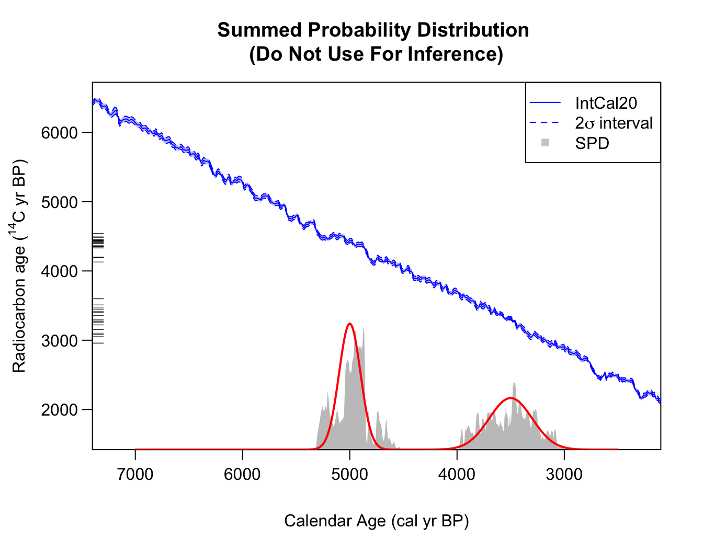

Summed Probability Distributions
Currently, the most commonly-used approach to summarise calendar age information from multiple 14C determinations is via summed probability distributions (SPD). These are not statistically valid estimators of the calendar age of a potential future sample. It is our view that they should not be used in any dates-as-data approach to provide a population proxy.
For an SPD, the posterior calendar age density of each object is first calculated independently) from the others as using the function above. These individual densities are then summed/averaged to give an SPD estimate. The independence assumed in the separate calibration of each sample, followed by subsequent summarisation, generates a contradiction.
Additionally, the SPDs approach fundamentally does not model the samples in the calendar age domain. Consequently, it is also not able to deal with inversions in the calibration curve where there are multiple disjoint calendar periods which are consistent with the observed determinations; or with plateau periods.
The SPD function is ONLY provided here as a
comparison with the other routines. To calculate the SPD for a set of
radiocarbon determinations (here we use the example dataset
armit (Armit et al. 2014))
see the example below, where we also plot the results.
spd <- FindSummedProbabilityDistribution(
calendar_age_range_BP = c(1000, 4500),
rc_determinations = armit$c14_age,
rc_sigmas = armit$c14_sig,
F14C_inputs = FALSE,
calibration_curve = intcal20,
plot_output = TRUE)
Note: The summary functions for plotting the predictive joint calendar age density using the rigorous Bayesian non-parametric alternative to SPDs (described in the vignette Non-parametric Summed Density) can also optionally plot the SPD without having to calculate it separately first.
Illustration of why not to use SPDs
Fitting to two Normals
Consider the simulated two_normals dataset. We know that
the calendar age density that underlies these 14C value is a
mixture of two normal densities - one centred at 3500 cal yr BP (with a
1\(\sigma\) standard deviation of 200
cal yrs); and another (more concentrated) centred at 5000 cal yr BP
(with a 1\(\sigma\) standard deviation
of 100 cal yrs). However, when we calculate the SPD we obtain:

Here we have manually overlain the true (known) shared calendar age density in red. As we can see, the SPD captures does capture some broad features but does not reconstruct the truth well, and is hard to interpret. In particular, the SPD is highly variable, showing multiple peaks, due to the wiggliness of the calibration curve. The SPD peak shown around 5300 cal yr BP is entirely spurious, yet almost of the same magnitude as its peak around 3500 cal yr BP (which is a part of the genuine density).